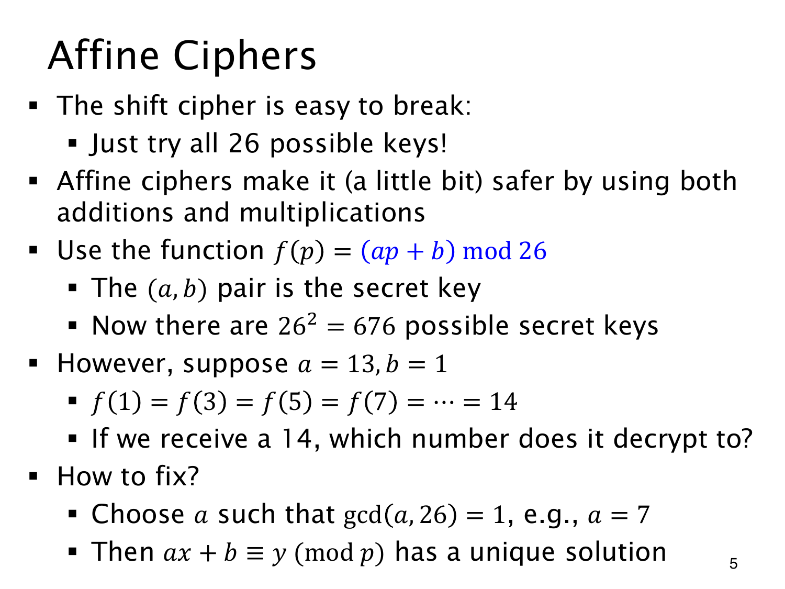

L1.14 · 第 5 页讲解原文
查看这一页课件

仿射密码先要保证能唯一解密
Affine cipher（仿射密码）用密钥 (a,b) 计算
f(p)=(ap+b)mod26,
把单纯平移扩展为先乘后加。但参数不能任意选。若 a=13,b=1，任意奇数 p=2t+1 都给出 13p+1=26t+14，密文编码一律是 14。接收者无法从 14 唯一还原原字母，加密的正确性就出了问题。
要求 gcd(a,26)=1，便能用 a 的逆元唯一解出 ap+b≡c(mod26) 中的 p。原页最后把模数写成 p，按整页系统应理解为 26。
原页的 262=676 算入了全部参数对。排除不可逆的乘数后，合法 a 为 1,3,5,7,9,11,15,17,19,21,23,25，共 12 个；b 有 26 种，故合法密钥为 312 个。
候选虽比平移密码多，空间仍很小，固定字母替换也保留频率结构。满足可逆性，尚不足以保证安全。